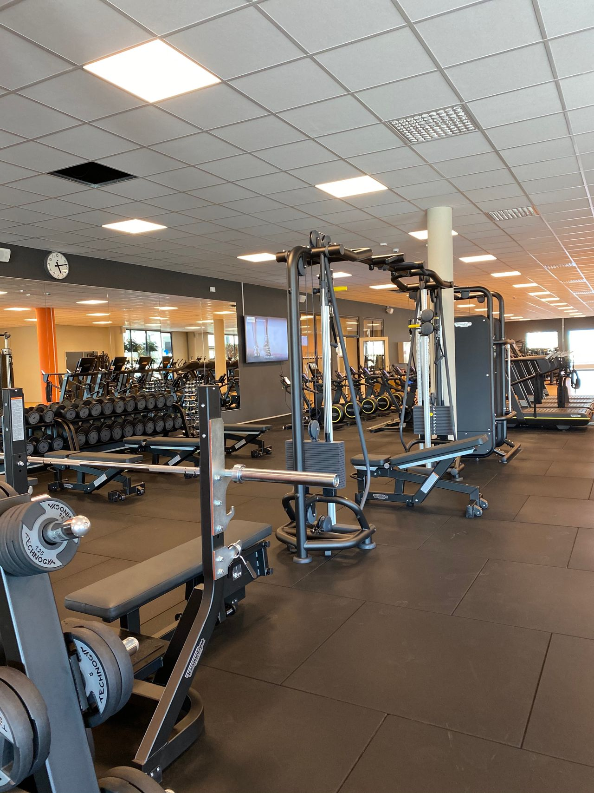
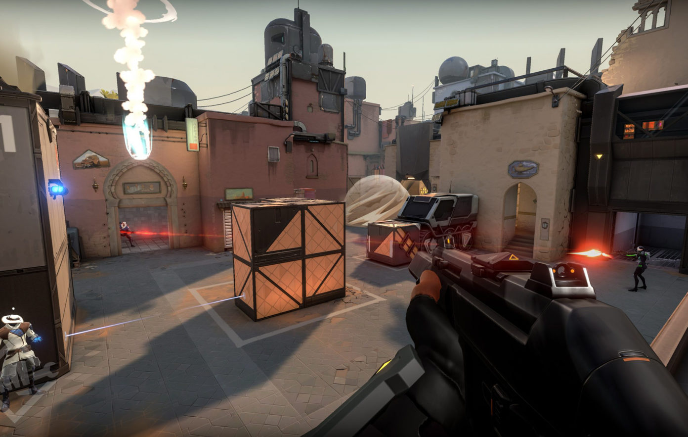
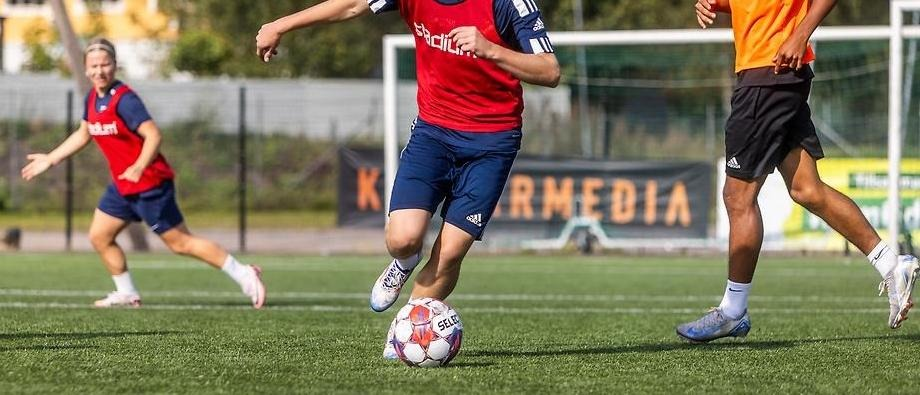

På min fritid har jag flera intressen som håller mig aktiv och engagerad. Jag gillar att utmana mig själv, lära mig nya saker och ha kul – oavsett om det är på gymmet, framför skärmen eller på planen.

Jag tränar regelbundet på gym och tycker om att utmana mina fysiska gränser. Träningen har lärt mig disciplin och vikten av att vara konsekvent för att nå sina mål.

Jag spelar mycket spel på fritiden och gillar allt från strategispel till actionspel. Det är ett sätt att koppla av och samtidigt träna upp sitt tänkande och reaktionsförmåga.

Jag har ett stort intresse för de flesta sporter och följer gärna med vad som händer inom sportvärlden. Även om jag inte är aktiv i någon förening just nu gillar jag att spela och röra på mig när tillfälle ges.